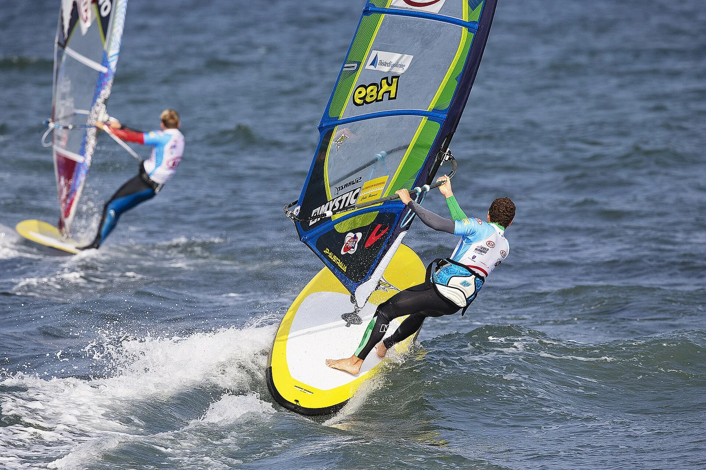

Klitmøller
Jutland, Danemark · surf, windsurf

Surnommé « Cold Hawaii », ce village de pêcheurs de la mer du Nord accueille des étapes de la Coupe du monde de windsurf. Reefs de pierre et vent fréquent.
- Lieu
- Jutland, Danemark
- Niveau
- Intermédiaire
- Activités
- surf, windsurf
- Type d'eau
- Mer / océan
- Coordonnées
- 57.04, 8.49 (position approximative du secteur)
Dangers à connaître
- Eau froide.
- Fonds de pierres.
Le conseil d'Ocean Buddy
Porte une combinaison épaisse et des chaussons : l’eau est froide et le fond est fait de pierres.
Ouvrir dans Ocean Buddy Télécharger sur l'App Store
Source : Fiche Ocean Buddy · septembre 2026 · à vérifier localement.